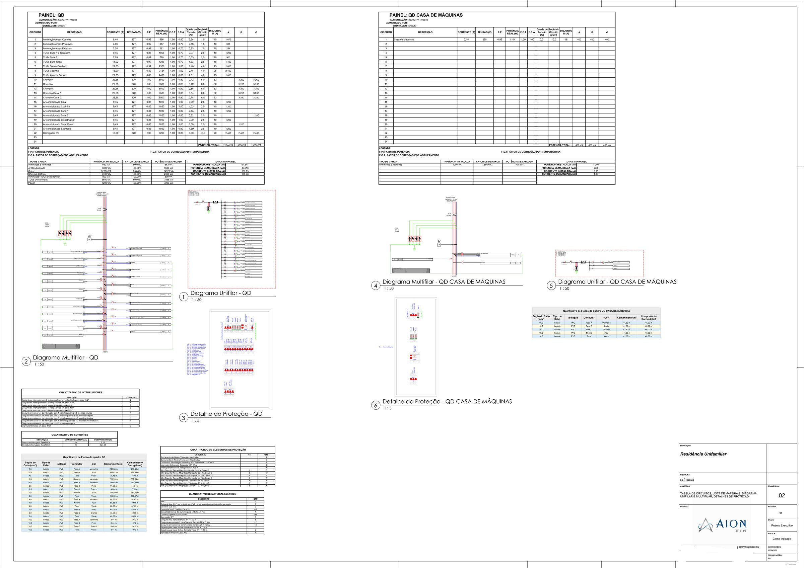
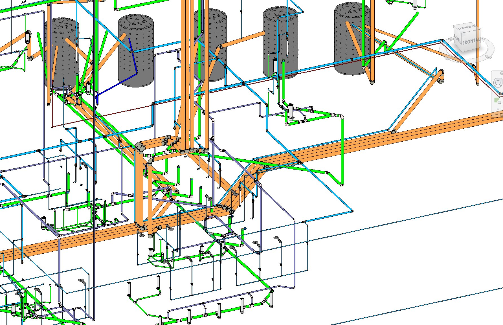
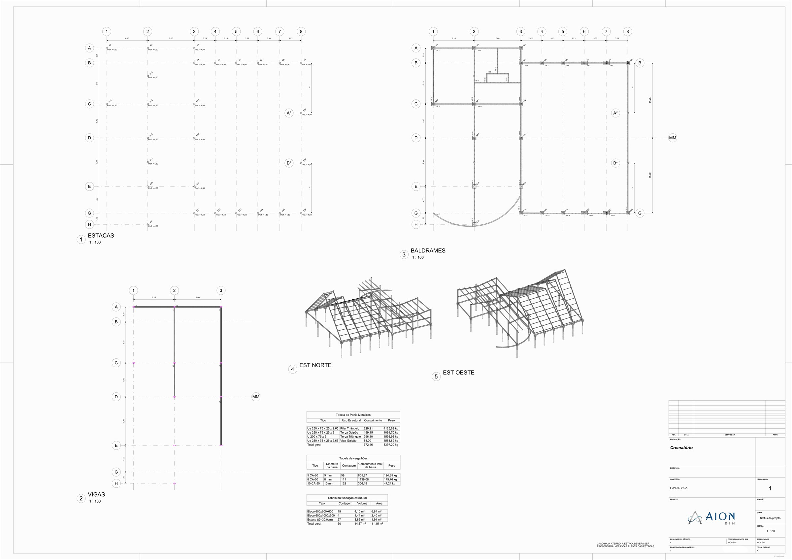
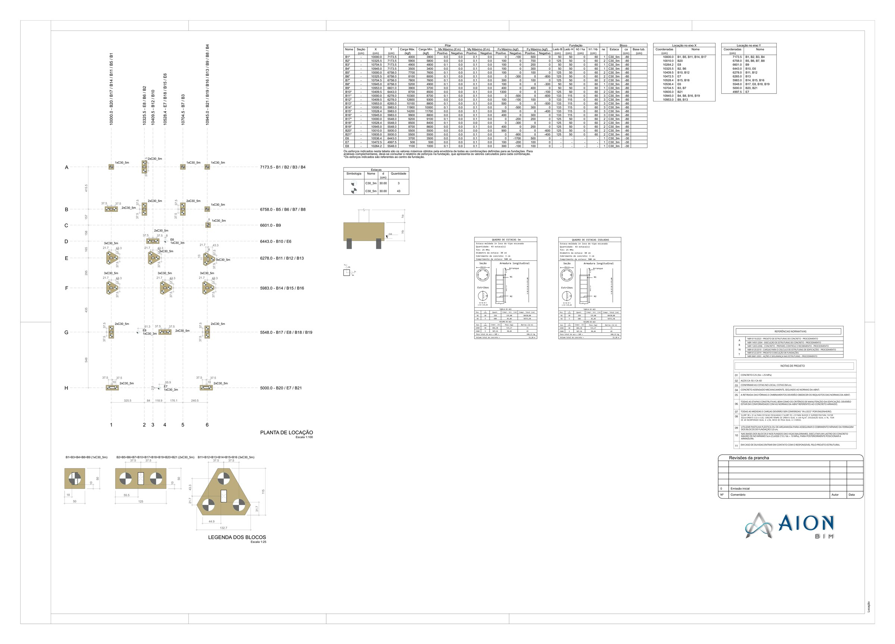
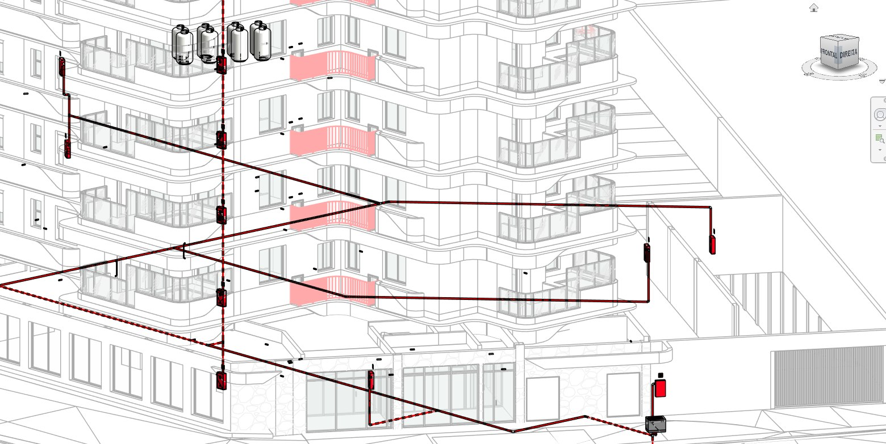
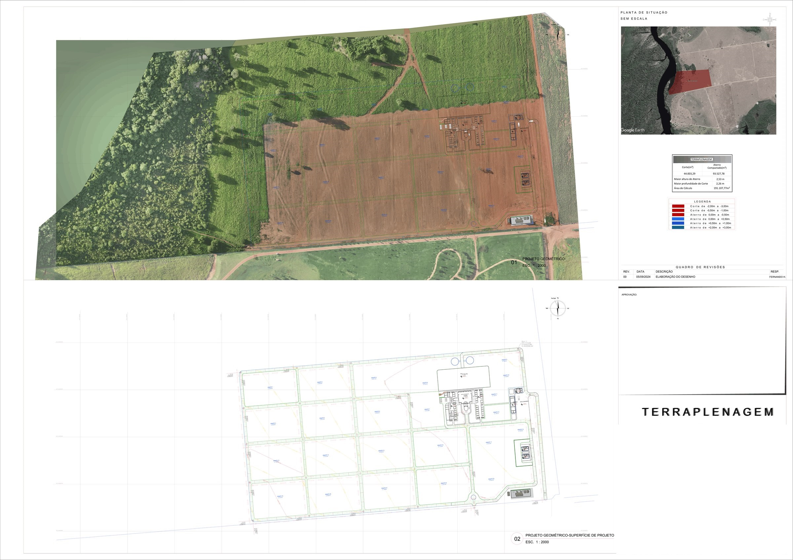
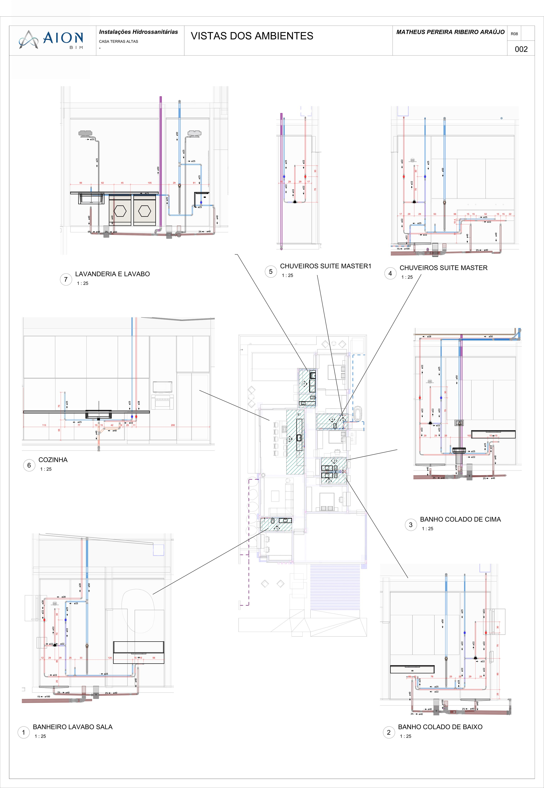
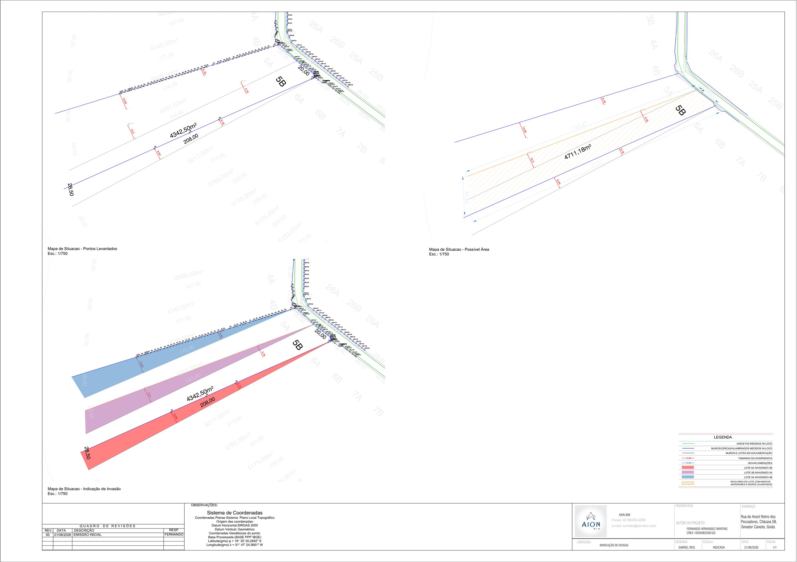
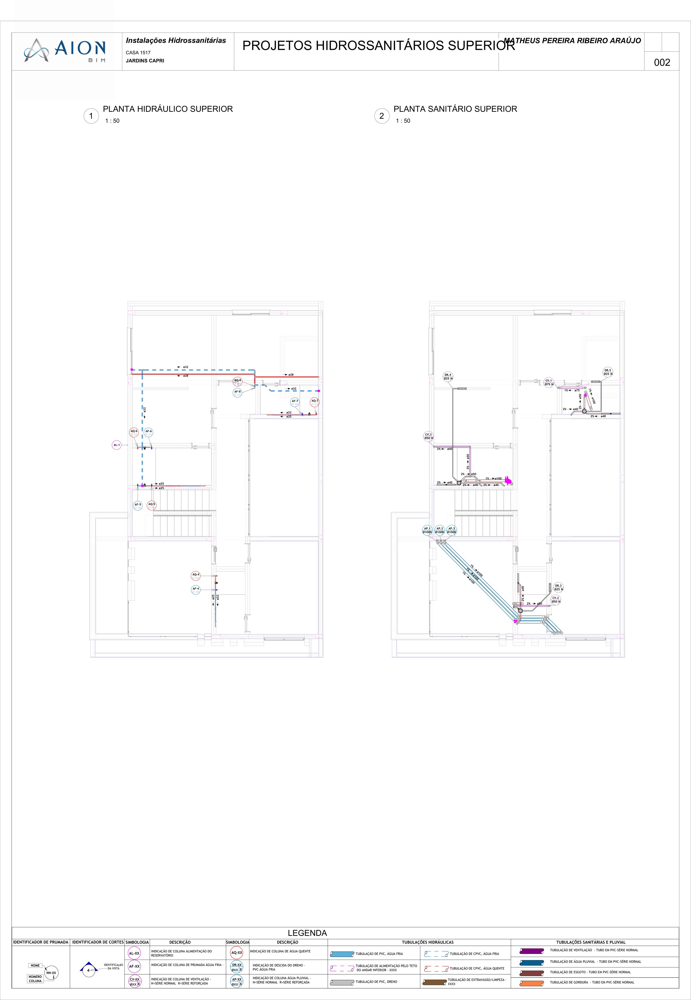

Graduando em Engenharia Civil pela Universidade Federal de Goiás (UFG) com vivência acadêmica internacional no Canadá (SMUS). Atuo na convergência entre o rigor da engenharia estrutural, a precisão da metodologia BIM multidisciplinar e o ganho de escala através da automação computacional com Python, Dynamo e Inteligência Artificial.
BIM Multidisciplinar
Estrutural, MEP & As-BuiltABAQUS (Modelo CDP)
Análise Não-Linear de ConcretoPython & Dynamo
Produtividade no RevitMinha formação une o embasamento matemático e mecânico da Universidade Federal de Goiás com a vivência internacional na St. Michael's University School no Canadá, proporcionando fluência técnica e capacidade de trabalho com normas nacionais e internacionais.
Ao longo de experiências práticas em escritórios de modelagem BIM (AION BIM), órgãos de segurança pública (Polícia Civil de Goiás), infraestrutura de saneamento (Saneago) e energia (Rio Vento Energia), desenvolvi um método de trabalho focado na eliminação de retrabalhos em obra através de modelos 3D perfeitamente compatibilizados, vistorias técnicas criteriosas e scripts customizados em Python e Dynamo.

Explore os modelos IFC federados diretamente no navegador. Alterne entre as obras Casa Térrea (Jardim Sul) e Galpão Industrial, controle camadas (Arquitetura, Estrutural e Elétrica) e ative o Modo de Caminhada em 1ª Pessoa com colisão realista e portas vazadas de passagem livre.

PRJ-01 · BIM MEPModelagem isométrica tridimensional contendo baterias de reservatórios superiores, barriletes, prumadas e colunas sanitárias compatibilizadas.
Modelagem espacial em padrão aberto IFC e Revit do encaminhamento de alimentadores, quadros de comando e eletrocalhas suspensas.

PRJ-03 · ESTRUTURALPranchas executivas contemplando fôrmas, locação de pilares/fundações, armaduras longitudinais/transversais de vigas contínuas e lajes.

PRJ-04 · FUNDAÇÕESMarcação de eixos ortogonais, coordenadas de estaqueamento, quadro de cargas de fundação e tabela de armação de pilares.

PRJ-05 · AS-BUILT 3DVetorização precisa de edificação existente a partir de escaneamento a laser LiDAR com precisão milimétrica e fotos esféricas de apoio.

PRJ-06 · TOPOGRAFIAPlanta topográfica de grande escala com curvas de nível equidistantes, cálculo de corte/aterro e delimitação de talhões e arruamento.

PRJ-07 · DETALHAMENTOPranchas executivas contendo ampliações de banheiros e cozinhas com indicação exata de registros, ralos e diâmetros nominais.

PRJ-08 · GEODÉSICAPlanta de demarcação perimétrica, amarração em coordenadas geográficas UTM (SIRGAS 2000) e memorial descritivo para cartório.

PRJ-09 · EXECUTIVOEsquemas verticais de colunas, ramais de distribuição predial e listas automatizadas de conexões prontas para canteiro.
Soluções práticas desenvolvidas para acelerar fluxos técnicos repetitivos, automatizar parametrizações no Revit com Dynamo/Python e realizar calibrações numéricas no ABAQUS.
# -*- coding: utf-8 -*-
"""
AUTOMAÇÃO BIM: Parametrização em Lote e Extração de Quantitativos no Revit
Autor: Gabriel Biagini Almeida Reis
Ambiente: Autodesk Revit / Dynamo Python Node (pyRevit)
"""
import clr
clr.AddReference('RevitAPI')
clr.AddReference('RevitServices')
from Autodesk.Revit.DB import *
from RevitServices.Persistence import DocumentManager
from RevitServices.Transactions import TransactionManager
doc = DocumentManager.Instance.CurrentDBDocument
def executar_parametrizacao_mep():
# Coleta todas as curvas de tubulação do projeto
collector = FilteredElementCollector(doc)\
.OfCategory(BuiltInCategory.OST_PipeCurves)\
.WhereElementIsNotElementType()\
.ToElements()
quantitativos = []
TransactionManager.Instance.EnsureInTransaction(doc)
for pipe in collector:
d_param = pipe.LookupParameter("Diâmetro")
l_param = pipe.LookupParameter("Comprimento")
s_param = pipe.LookupParameter("Tipo de Sistema")
if d_param and l_param and s_param:
diam_mm = round(d_param.AsDouble() * 304.8, 1) # Pés para mm
comp_m = round(l_param.AsDouble() * 0.3048, 2) # Pés para metros
sistema = s_param.AsString()
# Gera Tag Rastreável Padronizada
codigo_tag = f"MEP-{sistema[:3].upper()}-DN{int(diam_mm)}"
param_rastreio = pipe.LookupParameter("Código_Rastreabilidade")
if param_rastreio and not param_rastreio.IsReadOnly:
param_rastreio.Set(codigo_tag)
quantitativos.append({"ID": pipe.Id.IntegerValue, "Sistema": sistema, "DN_mm": diam_mm, "L_m": comp_m})
TransactionManager.Instance.TransactionTaskDone()
return f"Sucesso: {len(quantitativos)} elementos MEP parametrizados e quantificados."
OUT = executar_parametrizacao_mep()Simulação numérica não-linear do comportamento mecânico de vigas de concreto armado com substituição de agregado natural por agregado reciclado. Calibração e implementação do modelo constitutivo Concrete Damaged Plasticity (CDP) no ABAQUS, avaliando modos de ruptura por flexão/cisalhamento, propagação de fissuras e degradação de rigidez.
Investigação teórica e computacional de formulações de elementos finitos tridimensionais hexaédricos com graus de liberdade internos adicionais (modos incompatíveis de Wilson). O método corrige a rigidez excessiva sob flexão e elimina o travamento numérico por cisalhamento.
Desenvolvimento de projetos executivos multidisciplinares para implantação de lavanderias comunitárias de interesse social, otimizando o consumo de água através de reuso e dimensionamento hidráulico eficiente.
Instrução e orientação prática de turmas em ensaios mecânicos de laboratório: slump test, resistência à compressão axial de corpos de prova de concreto, módulo de elasticidade e caracterização de agregados.
Controle TecnológicoEnsino Médio internacional completo em Victoria, British Columbia, Canadá. Imersão bilíngue nativa, sólida base em ciências exatas e formação com visão global de engenharia.
Inglês Fluente (Canadá)Desenvolvimento de projetos multidisciplinares em ambiente BIM (estrutural, hidrossanitário, elétrico, arquitetônico e topográfico). Responsável pela modelagem As-Built a partir de nuvens de pontos escaneadas a laser (LiDAR) e elaboração de tours virtuais 360° para visualização imersiva de empreendimentos.
Atuação técnica em projetos de engenharia civil, reformas de prédios públicos, elaboração de orçamentos quantitativos discriminados para licitações e execução de vistorias técnicas in loco com emissão de relatórios de patologias da construção em delegacias em todo o estado.
Apoio técnico especializado na especificação de materiais e conexões de infraestrutura de saneamento básico, combinado com a automação e otimização de grandes planilhas no Excel (VBA) para agilizar a triagem e o controle do departamento de compras.
Elaboração de memórias de cálculo estruturais e operacionais em planilhas customizadas, além da produção de relatórios técnicos de engenharia para projetos do setor de energia renovável.
Seja para o desenvolvimento de modelagens executivas em BIM, projetos estruturais, vistorias técnicas ou automação de processos de engenharia com Python/Dynamo, estou à disposição.
(62) 98114-3331
Goiânia, Goiás · Brasil (Presencial / Remoto)
Preencha o formulário abaixo para enviar diretamente via WhatsApp ou E-mail.